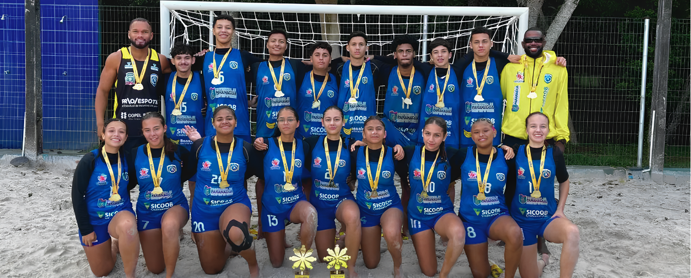
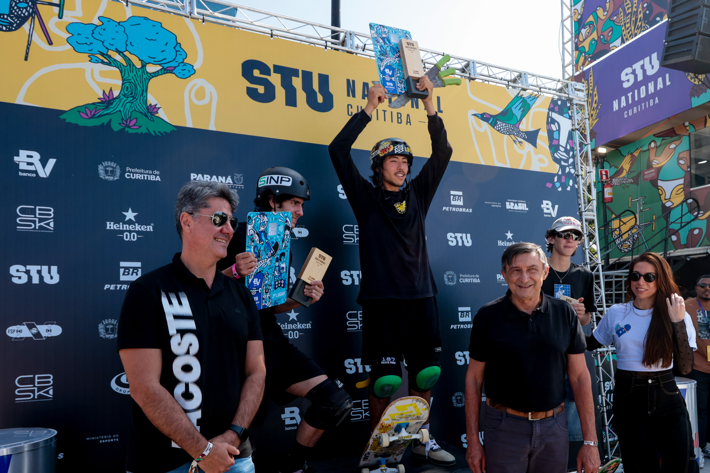
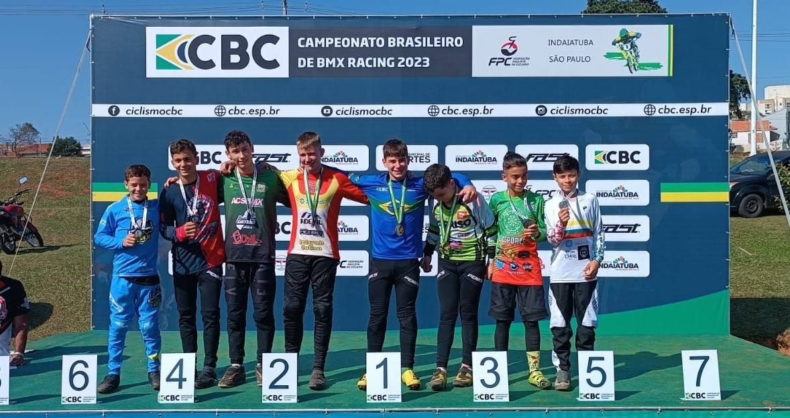
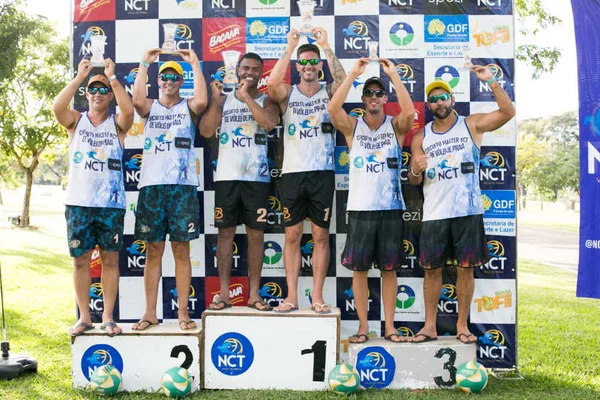

O projeto Portal Atleta está na missão de dar visibilidade aos atletas que, muitas vezes, estão fora dos holofotes do esporte, seja por limitação de recursos, ou por falta de oportunidades. A plataforma utiliza de recursos de descrição e contatação para deixar a experiência do usuário mais encorajadora e aumentar o engajamento. Isso cria não apenas uma vitrine para os patrocinadores, mas também um canal de desenvolvimento entre os próprios atletas do mesmo esporte.